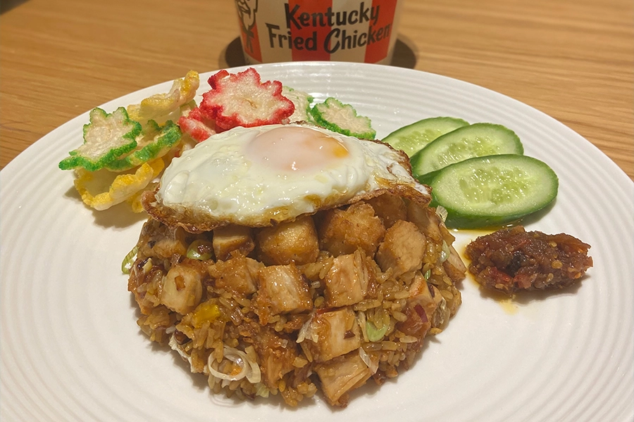

KFC Zinger Nasi Goreng

Isolation had us attempting some pretty wild things in the kitchen. Hongsta was a great innovator of the time.
His take on the classic indonesian fried rice was one of his many achievments.
KFC Zinger Nasi Goreng Ingredients
- 2-3 KFC Zinger fillets (cut into thick and small pieces)
- 1 birds eye chilli
- 1 golden shallot finely chopped
- 1 clove of garlic finely chopped
- 1 spring onions finely chopped
- 1 egg
- 1.5 cups of cooked jasmine rice
- 2 tablespoons kecap manis
- cucumber slices for garnish
- Indonesian sambal for garnish
- Vegetable oil
- Pinch of salt
KFC Zinger Nasi Goreng Recipe
- In a wok or pan heat 2 tablespoons of oil over high heat.
When the oil is hot, add the chilli, shallots and garlic.
Saute until golden brown.
- Add the rice and stir fry, continuing to loosen the rice by pressing down
with the back of the spoon. Afrer about 2 minures of srit frying, add the kecap manis, salt and the diced KFC fillets.
and stir through.
- Keep stirring over high heat for about 1 minute until the seasoning is incorporated
throughout the rice, and the fillets are warmed through. Add spring onions and stir. Add salt for additional seasoning to taste.
It should be sweet, a little salty, and a bit spicy.
- Present the Nasi Goreng by placing the mixture ina a small bowl. This will mould the Nasi Goreng.
After flattening out the top of the Nasi Foreng mixtire in line with the edge of
the bowl, tirn the bowl aroind and place it on top of a plate.
Remove the bowl slowly to allow for a dome of Nasi Goreng fried rice to be presented on the plate.
- Heat some more vegetable oil in the pan and fry an egg sunny side up, ladling the oil on top of the egg to make it extra crispy.
Once cooked, carefully place the egg on top of the Nasi Goreng rice dome.
- Garnish with sliced cucumber around the rice, as will as a dollop of spicy sambal on the side.